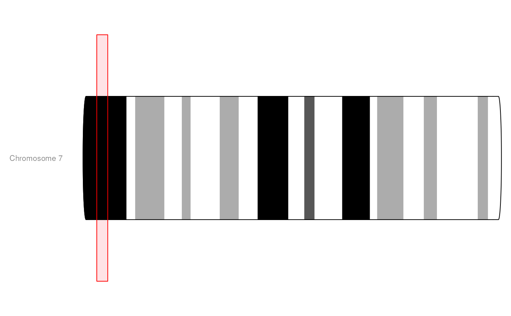
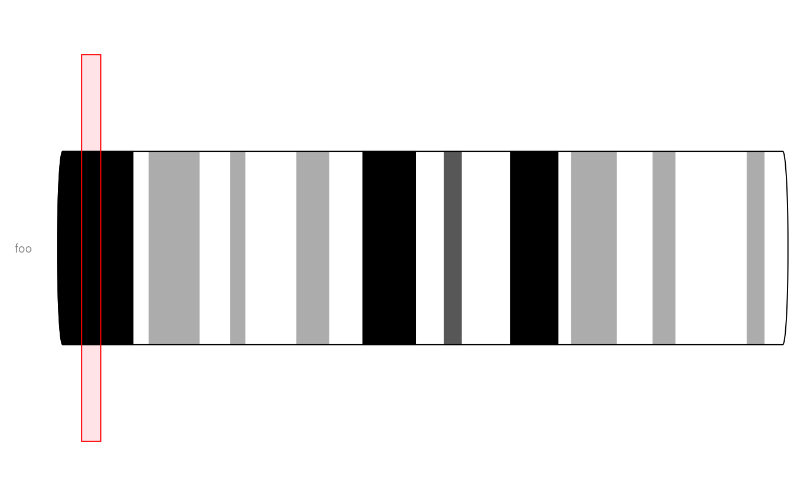

A class to represent the schematic display of a chromosome, also known as an ideogram. The respective information is typically directly fetched from UCSC.
# S4 method for class 'IdeogramTrack'
initialize(.Object, genome, chromosome, bands, name, ...)
IdeogramTrack(chromosome = NULL, genome, name = NULL, bands = NULL, ...)
# S4 method for class 'IdeogramTrack'
start(x)
# S4 method for class 'IdeogramTrack'
start(x) <- value
# S4 method for class 'IdeogramTrack'
end(x)
# S4 method for class 'IdeogramTrack'
end(x) <- value
# S4 method for class 'IdeogramTrack'
width(x)
# S4 method for class 'IdeogramTrack'
width(x) <- value
# S4 method for class 'IdeogramTrack'
length(x)
# S4 method for class 'IdeogramTrack'
chromosome(GdObject) <- value
# S4 method for class 'IdeogramTrack'
genome(x) <- value
# S4 method for class 'IdeogramTrack,ANY,ANY,ANY'
x[i, j, ..., drop = TRUE]
# S4 method for class 'IdeogramTrack'
position(GdObject, ...)
# S4 method for class 'IdeogramTrack'
drawGD(GdObject, minBase, maxBase, prepare = FALSE, ...)
# S4 method for class 'IdeogramTrack'
show(object)The object being initialized (standard S4 initialize
convention); not normally supplied directly by the user.
The genome on which to create the ideogram. This has to be a valid UCSC genome identifier if the ideogram data is to be fetched from the UCSC repository.
The chromosome for which to create the ideogram. Has to be
a valid UCSC chromosome identifier of the form chrx, or a single
integer or numeric character unless
option(ucscChromosomeNames=FALSE). The user has to make sure that the
respective chromosome is indeed defined for the track's genome.
A data.frame with the cytoband information for all
available chromosomes on the genome similar to the data that would be
fetched from UCSC. The table needs to contain the mandatory columns
chrom, chromStart, chromEnd, name and
gieStain with the chromosome name, cytoband start and end
coordinates, cytoband name and coloring information, respectively. This can
be used when no connection to the internet is available or when the cytoband
information has been cached locally to avoid the somewhat slow connection to
UCSC.
Character scalar of the track's name used in the title panel when plotting. Defaults to the selected chromosome.
Additional items which will all be interpreted as further display parameters.
The IdeogramTrack object.
The replacement value for a replacement method.
Index arguments for [-style subsetting; ignored, since
subsetting is not supported for IdeogramTrack.
logical; ignored, since subsetting is not supported for
IdeogramTrack.
The currently plotted genomic range.
logical, indicating whether drawGD is being called in
'prepare' mode (compute layout only) or 'plotting' mode (render to the
device).
The return value of the constructor function is a new object of class
IdeogramTrack.
Ideograms are schematic depictions of chromosomes, including chromosome band
information and centromere location. The relevant data for various species
is stored in the UCSC data base. The initializer method of the class will
automatically fetch the respective data for a given genome and chromosome
from UCSC and fill the appropriate object slots. When plotting
IdeogramTrack objects, the current genomic location is indicated on the
chromosome by a colored box.
The Gviz.ucscUrl option controls which URL is being used to connect
to UCSC. For instance, one could switch to the European UCSC mirror by
calling options(Gviz.ucscUrl = "http://genome-euro.ucsc.edu/cgi-bin/").
initialize(IdeogramTrack): Fetch the chromosome band and length
information from UCSC (or use the user-supplied bands table) and use it
to populate the range and bandTable slots.
IdeogramTrack(): Constructor function for
IdeogramTrack-class.
start(IdeogramTrack): returns NULL. The start coordinate is
not a meaningful concept for a whole-chromosome IdeogramTrack and is
not supported.
start(IdeogramTrack) <- value: a no-op: the start coordinate cannot be
set for an IdeogramTrack and the object is returned unchanged.
end(IdeogramTrack): returns NULL. The end coordinate is
not a meaningful concept for a whole-chromosome IdeogramTrack and is
not supported.
end(IdeogramTrack) <- value: a no-op: the end coordinate cannot be
set for an IdeogramTrack and the object is returned unchanged.
width(IdeogramTrack): returns NULL. The width is not a
meaningful concept for a whole-chromosome IdeogramTrack and is not
supported.
width(IdeogramTrack) <- value: a no-op: the width cannot be set for an
IdeogramTrack and the object is returned unchanged.
length(IdeogramTrack): return the number of chromosome bands
stored in the object.
chromosome(IdeogramTrack) <- value: replace the active chromosome. If band
information for the new chromosome is already cached in the object's
bandTable slot it is reused directly; otherwise a new IdeogramTrack
is constructed by re-fetching the band data for the new chromosome.
genome(IdeogramTrack) <- value: replace the active genome, re-fetching
the chromosome band information for the new genome.
x = IdeogramTrack[i = ANY, j = ANY, drop = ANY]: subsetting is not supported for
IdeogramTrack; the object is returned unchanged.
position(IdeogramTrack): returns NULL. Genomic position is not a
meaningful concept for a whole-chromosome IdeogramTrack and is not
supported.
drawGD(IdeogramTrack): plot the object to a graphics device,
rendering the chromosome bands, centromere and, if from/to are
supplied, a highlighted box indicating the currently displayed genomic
region.
show(IdeogramTrack): Show method.
When fetching ideogram data from UCSC the results are cached for faster access. See clearSessionCache on details to delete these cached items.
Objects can be created using the constructor function IdeogramTrack.
## Construct the object
# \donttest{
idTrack <- IdeogramTrack(chromosome = 7, genome = "mm39")
#> Warning: 'getMethods' is deprecated.
#> Use 'getMethodsForDispatch(f, TRUE)' instead.
#> See help("Deprecated")
#> Warning: 'getMethods' is deprecated.
#> Use 'getMethodsForDispatch(f, TRUE)' instead.
#> See help("Deprecated")
#> Warning: 'getMethods' is deprecated.
#> Use 'getMethodsForDispatch(f, TRUE)' instead.
#> See help("Deprecated")
# }
## Plotting
plotTracks(idTrack, from = 5000000, to = 9000000)

## Track names
names(idTrack)
#> [1] "chr7"
names(idTrack) <- "foo"
plotTracks(idTrack, from = 5000000, to = 9000000)

## Accessors
chromosome(idTrack)
#> [1] "chr7"
# \donttest{
chromosome(idTrack) <- "chrX"
# }
genome(idTrack)
#> [1] "mm39"
# \donttest{
genome(idTrack) <- "hg38"
#> Updating chromosome band information
#> Warning: 'getMethods' is deprecated.
#> Use 'getMethodsForDispatch(f, TRUE)' instead.
#> See help("Deprecated")
#> Warning: 'getMethods' is deprecated.
#> Use 'getMethodsForDispatch(f, TRUE)' instead.
#> See help("Deprecated")
# }
range(idTrack)
#> IRanges object with 40 ranges and 0 metadata columns:
#> start end width
#> <integer> <integer> <integer>
#> [1] 0 4400000 4400001
#> [2] 4400000 6100000 1700001
#> [3] 6100000 9600000 3500001
#> [4] 9600000 17400000 7800001
#> [5] 17400000 19200000 1800001
#> ... ... ... ...
#> [36] 134500000 138900000 4400001
#> [37] 138900000 141200000 2300001
#> [38] 141200000 143000000 1800001
#> [39] 143000000 148000000 5000001
#> [40] 148000000 156040895 8040896
ranges(idTrack)
#> GRanges object with 40 ranges and 2 metadata columns:
#> seqnames ranges strand | name type
#> <Rle> <IRanges> <Rle> | <character> <character>
#> [1] p22.33 0-4400000 * | p22.33 gneg
#> [2] p22.32 4400000-6100000 * | p22.32 gpos50
#> [3] p22.31 6100000-9600000 * | p22.31 gneg
#> [4] p22.2 9600000-17400000 * | p22.2 gpos50
#> [5] p22.13 17400000-19200000 * | p22.13 gneg
#> ... ... ... ... . ... ...
#> [36] q26.3 134500000-138900000 * | q26.3 gneg
#> [37] q27.1 138900000-141200000 * | q27.1 gpos75
#> [38] q27.2 141200000-143000000 * | q27.2 gneg
#> [39] q27.3 143000000-148000000 * | q27.3 gpos100
#> [40] q28 148000000-156040895 * | q28 gneg
#> -------
#> seqinfo: 40 sequences from an unspecified genome; no seqlengths
## Annotation
values(idTrack)
#> name type
#> 1 p22.33 gneg
#> 2 p22.32 gpos50
#> 3 p22.31 gneg
#> 4 p22.2 gpos50
#> 5 p22.13 gneg
#> 6 p22.12 gpos50
#> 7 p22.11 gneg
#> 8 p21.3 gpos100
#> 9 p21.2 gneg
#> 10 p21.1 gpos100
#> 11 p11.4 gneg
#> 12 p11.3 gpos75
#> 13 p11.23 gneg
#> 14 p11.22 gpos25
#> 15 p11.21 gneg
#> 16 p11.1 acen
#> 17 q11.1 acen
#> 18 q11.2 gneg
#> 19 q12 gpos50
#> 20 q13.1 gneg
#> 21 q13.2 gpos50
#> 22 q13.3 gneg
#> 23 q21.1 gpos100
#> 24 q21.2 gneg
#> 25 q21.31 gpos100
#> 26 q21.32 gneg
#> 27 q21.33 gpos75
#> 28 q22.1 gneg
#> 29 q22.2 gpos50
#> 30 q22.3 gneg
#> 31 q23 gpos75
#> 32 q24 gneg
#> 33 q25 gpos100
#> 34 q26.1 gneg
#> 35 q26.2 gpos25
#> 36 q26.3 gneg
#> 37 q27.1 gpos75
#> 38 q27.2 gneg
#> 39 q27.3 gpos100
#> 40 q28 gneg
## coercion
as(idTrack, "data.frame")
#> X.seqnames X.start X.end X.width X.strand X.name X.type name
#> 1 p22.33 0 4400000 4400001 * p22.33 gneg p22.33
#> 2 p22.32 4400000 6100000 1700001 * p22.32 gpos50 p22.32
#> 3 p22.31 6100000 9600000 3500001 * p22.31 gneg p22.31
#> 4 p22.2 9600000 17400000 7800001 * p22.2 gpos50 p22.2
#> 5 p22.13 17400000 19200000 1800001 * p22.13 gneg p22.13
#> 6 p22.12 19200000 21900000 2700001 * p22.12 gpos50 p22.12
#> 7 p22.11 21900000 24900000 3000001 * p22.11 gneg p22.11
#> 8 p21.3 24900000 29300000 4400001 * p21.3 gpos100 p21.3
#> 9 p21.2 29300000 31500000 2200001 * p21.2 gneg p21.2
#> 10 p21.1 31500000 37800000 6300001 * p21.1 gpos100 p21.1
#> 11 p11.4 37800000 42500000 4700001 * p11.4 gneg p11.4
#> 12 p11.3 42500000 47600000 5100001 * p11.3 gpos75 p11.3
#> 13 p11.23 47600000 50100000 2500001 * p11.23 gneg p11.23
#> 14 p11.22 50100000 54800000 4700001 * p11.22 gpos25 p11.22
#> 15 p11.21 54800000 58100000 3300001 * p11.21 gneg p11.21
#> 16 p11.1 58100000 61000000 2900001 * p11.1 acen p11.1
#> 17 q11.1 61000000 63800000 2800001 * q11.1 acen q11.1
#> 18 q11.2 63800000 65400000 1600001 * q11.2 gneg q11.2
#> 19 q12 65400000 68500000 3100001 * q12 gpos50 q12
#> 20 q13.1 68500000 73000000 4500001 * q13.1 gneg q13.1
#> 21 q13.2 73000000 74700000 1700001 * q13.2 gpos50 q13.2
#> 22 q13.3 74700000 76800000 2100001 * q13.3 gneg q13.3
#> 23 q21.1 76800000 85400000 8600001 * q21.1 gpos100 q21.1
#> 24 q21.2 85400000 87000000 1600001 * q21.2 gneg q21.2
#> 25 q21.31 87000000 92700000 5700001 * q21.31 gpos100 q21.31
#> 26 q21.32 92700000 94300000 1600001 * q21.32 gneg q21.32
#> 27 q21.33 94300000 99100000 4800001 * q21.33 gpos75 q21.33
#> 28 q22.1 99100000 103300000 4200001 * q22.1 gneg q22.1
#> 29 q22.2 103300000 104500000 1200001 * q22.2 gpos50 q22.2
#> 30 q22.3 104500000 109400000 4900001 * q22.3 gneg q22.3
#> 31 q23 109400000 117400000 8000001 * q23 gpos75 q23
#> 32 q24 117400000 121800000 4400001 * q24 gneg q24
#> 33 q25 121800000 129500000 7700001 * q25 gpos100 q25
#> 34 q26.1 129500000 131300000 1800001 * q26.1 gneg q26.1
#> 35 q26.2 131300000 134500000 3200001 * q26.2 gpos25 q26.2
#> 36 q26.3 134500000 138900000 4400001 * q26.3 gneg q26.3
#> 37 q27.1 138900000 141200000 2300001 * q27.1 gpos75 q27.1
#> 38 q27.2 141200000 143000000 1800001 * q27.2 gneg q27.2
#> 39 q27.3 143000000 148000000 5000001 * q27.3 gpos100 q27.3
#> 40 q28 148000000 156040895 8040896 * q28 gneg q28
#> type
#> 1 gneg
#> 2 gpos50
#> 3 gneg
#> 4 gpos50
#> 5 gneg
#> 6 gpos50
#> 7 gneg
#> 8 gpos100
#> 9 gneg
#> 10 gpos100
#> 11 gneg
#> 12 gpos75
#> 13 gneg
#> 14 gpos25
#> 15 gneg
#> 16 acen
#> 17 acen
#> 18 gneg
#> 19 gpos50
#> 20 gneg
#> 21 gpos50
#> 22 gneg
#> 23 gpos100
#> 24 gneg
#> 25 gpos100
#> 26 gneg
#> 27 gpos75
#> 28 gneg
#> 29 gpos50
#> 30 gneg
#> 31 gpos75
#> 32 gneg
#> 33 gpos100
#> 34 gneg
#> 35 gpos25
#> 36 gneg
#> 37 gpos75
#> 38 gneg
#> 39 gpos100
#> 40 gneg